Project 2: Fun with Filters and Frequencies!
[View Assignment]Part 1: Fun with Filters
Part 1.1: Convolutions from Scratch!
I will be using my profile picture for the convolutions (it will be read as grayscale):

Four For-Loop Convolution Implementation
def convolution_four(im, filter):
H, W = im.shape
h, w = filter.shape
pad_h, pad_w = h // 2, w // 2
im_pad = np.pad(im, ((pad_h, pad_h), (pad_w, pad_w)))
out = np.zeros((H, W))
for i in range(H):
for j in range(W):
val = 0
for m in range(h):
for n in range(w):
val += im_pad[i + m, j + n] * filter[(h-1)-m, (w-1)-n] # get flipped filter index
out[i, j] = val
return out
Two For-Loop Convolution Implementation
def convolution_two(im, filter):
H, W = im.shape
h, w = filter.shape
pad_h, pad_w = h // 2, w // 2
im_pad = np.pad(im, ((pad_h, pad_h), (pad_w, pad_w)))
out = np.zeros((H, W))
filter = filter[::-1, ::-1] # flip filter horizontally/vertically
for i in range(H):
for j in range(W):
patch = im_pad[i:i+h, j:j+w]
out[i, j] = np.sum(patch * filter)
return out
Both implementations handle the boundaries using zero-fill padding, extending the image in both kernel height H and kernel width W by h and w // 2.
Comparison to Built-In Convolution (scipy.signal.convolve2d)
Now, I will use my profile image to test my implementations with the built-in convolution function scipy.signal.convolve2d. I will try each convolution method with a box filter, and the finite difference operators \(D_x = \begin{pmatrix} 1 & 0 & -1 \end{pmatrix}\) and \(D_y \begin{pmatrix} 1 \\ 0 \\ -1 \end{pmatrix}\).
me_gray = skio.imread(f'./data/me.jpg', as_gray=True)
me_gray = sk.img_as_float(me_gray)
box_filter = np.ones((9, 9)) / 81
Dx = np.array([[1, 0, -1]])
Dy = np.array([[1], [0], [-1]])
start = perf_counter()
conv_four_box = convolution_four(me_gray, box_filter)
end = perf_counter()
print(f'Convolution (four loops) time: {end - start:.4f} seconds')
conv_four_dx = convolution_four(me_gray, Dx)
conv_four_dy = convolution_four(me_gray, Dy)
start = perf_counter()
conv_two_box = convolution_two(me_gray, box_filter)
end = perf_counter()
print(f'Convolution (two loops) time: {end - start:.4f} seconds')
conv_two_dx = convolution_two(me_gray, Dx)
conv_two_dy = convolution_two(me_gray, Dy)
start = perf_counter()
conv_scipy_box = sp.signal.convolve2d(me_gray, box_filter, mode='same')
end = perf_counter()
print(f'Built-In Convolution (scipy) time: {end - start:.4f} seconds')
conv_scipy_dx = sp.signal.convolve2d(me_gray, Dx, mode='same')
conv_scipy_dy = sp.signal.convolve2d(me_gray, Dy, mode='same')
Convolution (four loops) time: 11.0136 seconds
Convolution (two loops) time: 1.6353 seconds
Built-In Convolution (scipy) time: 1.0861 seconds
As expected, the four for-loop convolution is significantly slower than the two for-loop convolution and the built-in convolution. The built-in convolution is faster than the two for-loop convolution, but they are in the same order of magnitude.
Here are the results for each convolution method:
Four For-Loop Convolution

Box Filter

\(D_x\) (Vertical edge detector)

\(D_y\) (Horizontal edge detector)
Two For-Loop Convolution
Box Filter
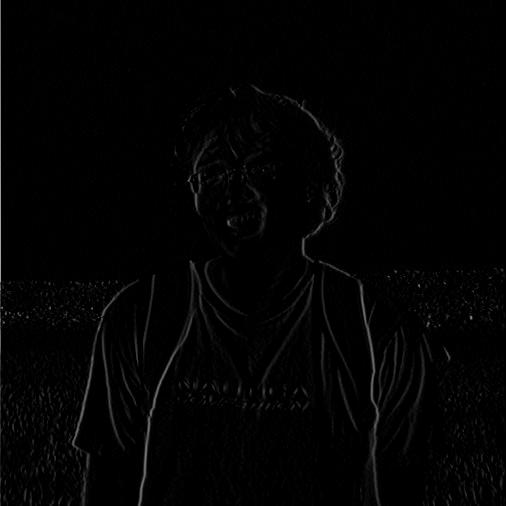
\(D_x\) (Vertical edge detector)
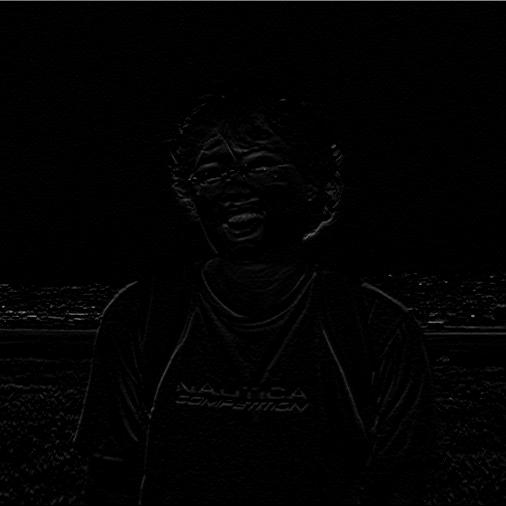
\(D_y\) (Horizontal edge detector)
Built-In Convolution

Box Filter

\(D_x\) (Vertical edge detector)

\(D_y\) (Horizontal edge detector)
All three convolution methods produce the same results. The box filter smooths/blurs the image, while the finite difference operators highlight edges in the horizontal and vertical directions.
Part 1.2: Finite Difference Operator
I will be using this image:

Code
Dx = np.array([[1, 0, -1]])
Dy = np.array([[1], [0], [-1]])
...
cameraman = skio.imread(f'./data/cameraman.jpg', as_gray=True)
cameraman = sk.img_as_float(cameraman)
Ix = sp.signal.convolve2d(cameraman, Dx, mode='same', boundary='symm')
Iy = sp.signal.convolve2d(cameraman, Dy, mode='same', boundary='symm')
gradient_magnitude = np.sqrt(Ix**2 + Iy**2)
edge_image = (gradient_magnitude > 0.35).astype(np.uint8) * 255
Here, I convolved the image with the finite difference operators \(D_x\) and \(D_y\) in order to get the partial derivatives in \(x\), \(I_x\), and \(y\), \(I_y\). Then using \(I_x\) and \(I_y\), I computed the gradient magnitude image by \(\sqrt{I_x^2 + I_y^2}\).
Finally, I created a binarized edge image by thresholding the gradient magnitude image at \(>0.35\). This took a few iterations fine-tuning, as I was aiming for an edge image that have all prominent edges, while removing as much noise possible (e.g., the grass). Note that it was difficult getting the edges of the buildings in the background, as the filters could only extract the edges of the cameraman in the foreground.
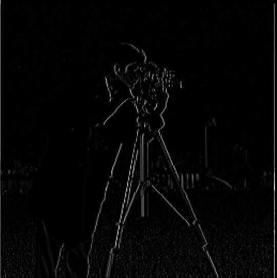
Partial derivative in \(x\), \(I_x\)
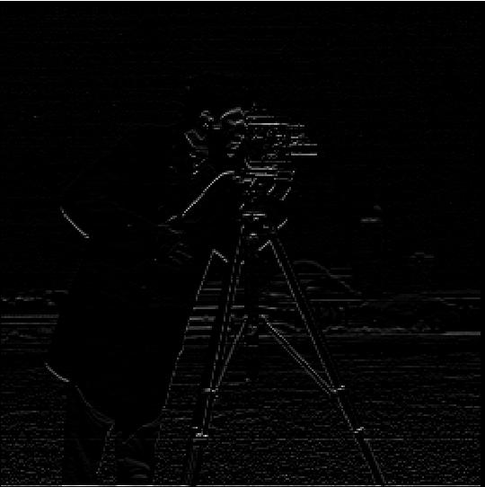
Partial derivative in \(y\), \(I_y\)
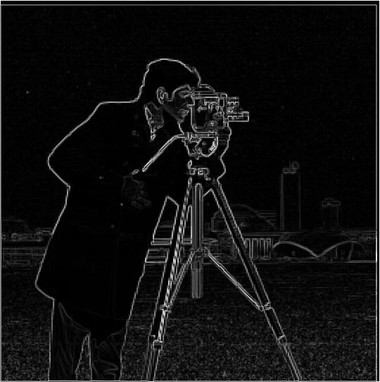
Gradient Magnitude Image
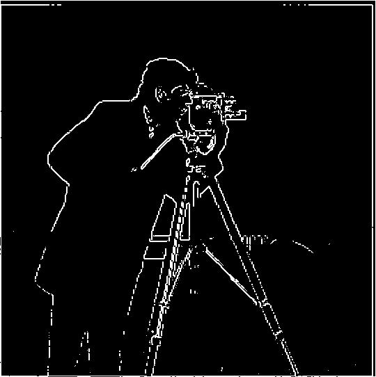
A binarized edge image (threshold \(>0.35\))
Part 1.3: Derivative of Gaussian (DoG) Filter
I will be using the same image from Part 1.2. I wasn't able to cleanly remove the noise in the previous results, so now I will use the Gaussian filter to first smooth/blur the image. Using the built in 1D Gaussian filter cv2.getGaussianKernel(), I created a 2D Gaussian filter for images by taking the outer product of the 1D Gaussian and its transpose.
def gaussian_filter(kernel_size=9, sigma=2):
g1d = cv2.getGaussianKernel(kernel_size, sigma)
return g1d @ g1d.T
This is what the blurred version of the cameraman looks like after convolving it with this Gaussian filter:
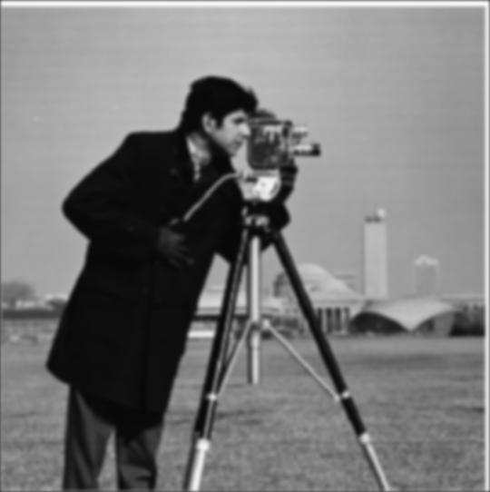
Now repeating the same procedure in Part 1.2,
G = gaussian_filter()
blurred = sp.signal.convolve2d(cameraman, G, mode='same', boundary='symm')
Ix = sp.signal.convolve2d(blurred, Dx, mode='same', boundary='symm')
Iy = sp.signal.convolve2d(blurred, Dy, mode='same', boundary='symm')
gradient_mag_blur = np.sqrt(Ix**2 + Iy**2)
edge_image_blur = (gradient_mag_blur > 0.09).astype(np.uint8) * 255
which gets these results:
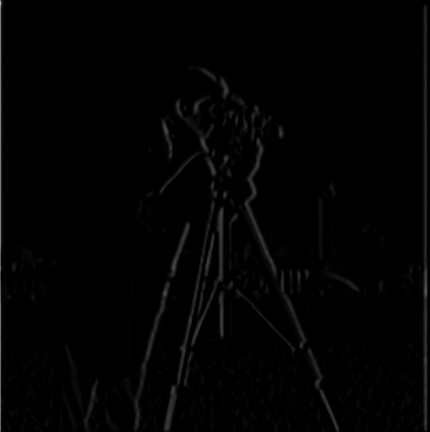
Partial derivative in \(x\), \(I_x\) (blurred)
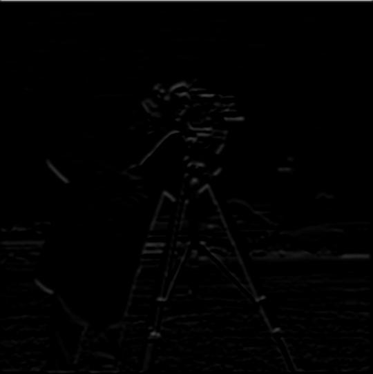
Partial derivative in \(y\), \(I_y\) (blurred)
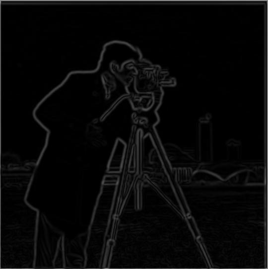
Gradient Magnitude Image (blurred)
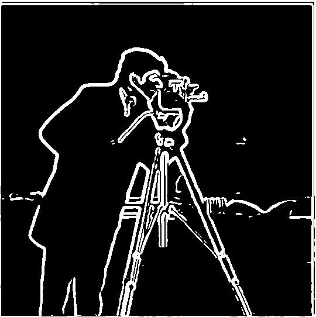
A binarized edge image (threshold \(>0.09\)) (blurred)
I had to lower the thresholding value to \(>0.09\). Now, I can do the same thing but avoid having to smooth the original image by convolving the Gaussian with \(D_x\) and \(D_y\) to get derivative of Gaussian (DoG) filters:
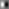
Derivative of Gaussian in \(x\)
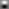
Derivative of Gaussian in \(y\)
Note: the filters themselves are small kernels, but when applied they reveal strong horizontal/vertical edges.
DoGx = sp.signal.convolve2d(G, Dx, mode='same', boundary='symm')
DoGy = sp.signal.convolve2d(G, Dy, mode='same', boundary='symm')
Ix_DoG = sp.signal.convolve2d(cameraman, DoGx, mode='same', boundary='symm')
Iy_DoG = sp.signal.convolve2d(cameraman, DoGy, mode='same', boundary='symm')
gradient_mag_dog = np.sqrt(Ix_DoG**2 + Iy_DoG**2)
edge_image_dog = (gradient_mag_dog > 0.09).astype(np.uint8) * 255
And we get practically the same results:
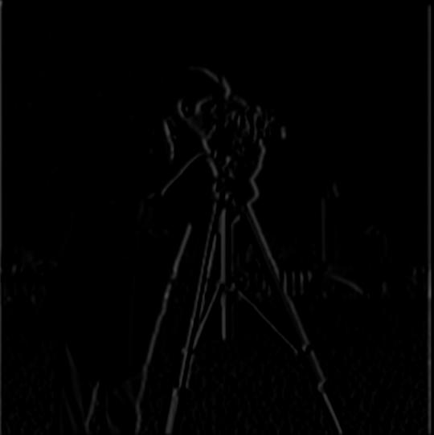
Partial derivative in \(x\), \(I_x\) (DoG)
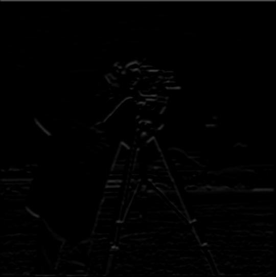
Partial derivative in \(y\), \(I_y\) (DoG)
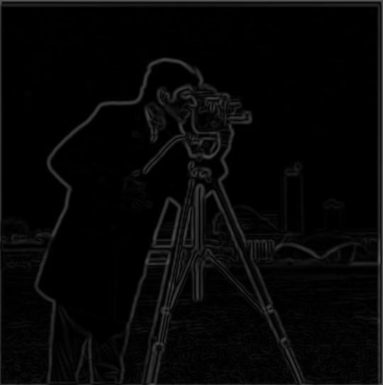
Gradient Magnitude Image (DoG)
A binarized edge image (threshold \(>0.09\)) (DoG)
I used the same thresholding value \(>0.09\). We can compare the edge images for all three methods:
Derivative of Gaussian (DoG) filter method
Gaussian smoothing method
Finite difference method
The results for DoG and Gaussian smoothing are much cleaner, as the Gaussian filter was able to smooth out the noise in the image.
Part 2: Fun with Frequencies!
Part 2.1: Image "Sharpening"
This is my implementation of the unsharp mask filtering technique:
def unsharp_masking(im, kernel_size=9, sigma=2, alpha=1.0):
G = gaussian_filter(kernel_size, sigma)
sharpened = np.zeros_like(im, dtype=np.float32)
high_freq_all = np.zeros_like(im, dtype=np.float32)
for channel in range(im.shape[2]):
blurred = sp.signal.convolve2d(im[:, :, channel], G, mode='same', boundary='symm')
high_freq = im[:, :, channel] - blurred
high_freq_all[:, :, channel] = high_freq
sharpened[:, :, channel] = im[:, :, channel] + (alpha * high_freq)
return np.clip(sharpened, 0, 1), high_freq_all
Here, I use the Gaussian filter as a low-pass (blur) filter to extract the low frequencies of each color channel of an image, then subtract these blurry images from the original image to obtain only the high frequencies. With these high frequencies, I added it back into the original image to "sharpen" the original. I noticed that my profile image was a bit blurry. So after running,
taj = skio.imread(f'./data/taj.jpg')
taj = sk.img_as_float(taj)
me = skio.imread(f'./data/me.jpg')
me = sk.img_as_float(me)
sharpened_taj, high_freq_taj = unsharp_masking(taj)
sharpened_me, high_freq_me = unsharp_masking(me)
these are the results of a Taj Mahal image and me:

Original blurry image of the Taj Mahal
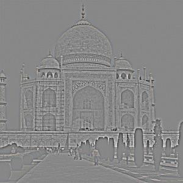
High-frequencies of the Taj Mahal
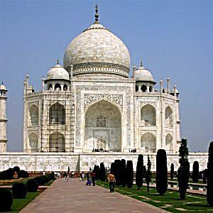
Sharpened version of the Taj Mahal
Original blurry image of me
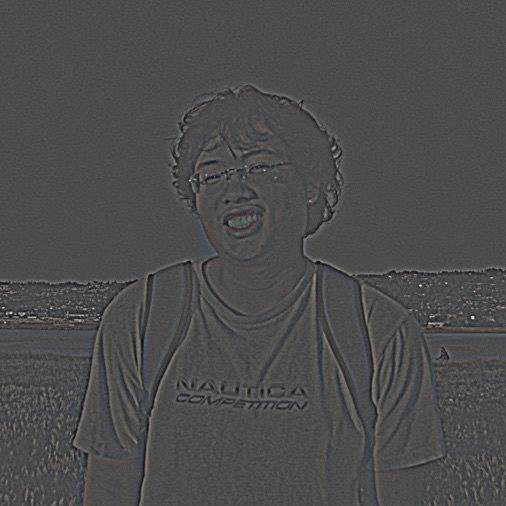
High-frequencies of me
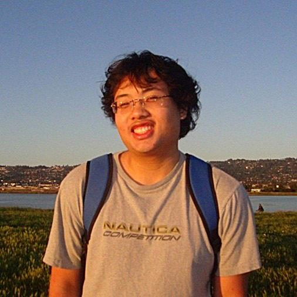
Sharpened version of me
For evaluation, I blurred the sharpened image of the Taj Mahal and then tried to sharpen it again:
blurred_sharp_taj = np.zeros_like(sharpened_taj, dtype=np.float32)
for channel in range(sharpened_taj.shape[2]):
blurred_sharp_taj[:, :, channel] = sp.signal.convolve2d(sharpened_taj[:, :, channel], G,
mode='same', boundary='symm')
sharpened_blurred_sharp_taj, high_freq_blurred_sharp_taj = unsharp_masking(blurred_sharp_taj)
These are the results:
Blurred version of the sharpened Taj Mahal
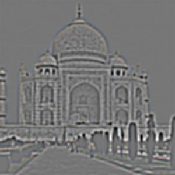
High-frequencies of the blurred sharpened Taj Mahal
Sharpened version of the blurred sharpened Taj Mahal
As you can see, the "sharpening" doesn't seem to work because blurring an image will remove most of the high frequencies, so trying to "sharpen" it will only add little high frequency it has left to the original image, and thus the result looks similar to the input.
I will now demonstrate trying different \(\alpha\) values (varying the sharpening amount) affects the results. The previous results used \(\alpha = 1.0\).
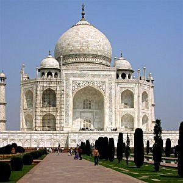
\(\alpha = 0.5\)
\(\alpha = 2.0\)
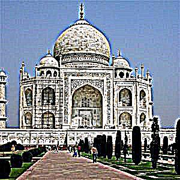
\(\alpha = 10.0\)
The higher the \(\alpha\), the stronger the sharpness becomes in the resulting image. \(\alpha\) essentially amplifies the high frequencies that are added back into the original image.
Part 2.2: Hybrid Images
I will create hybrid images for the following 3 pairs:


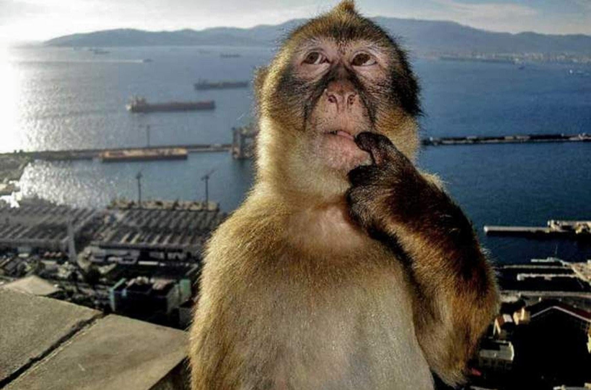
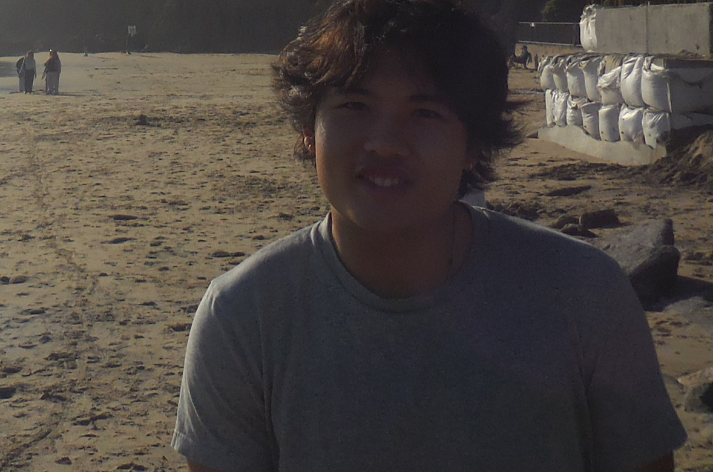
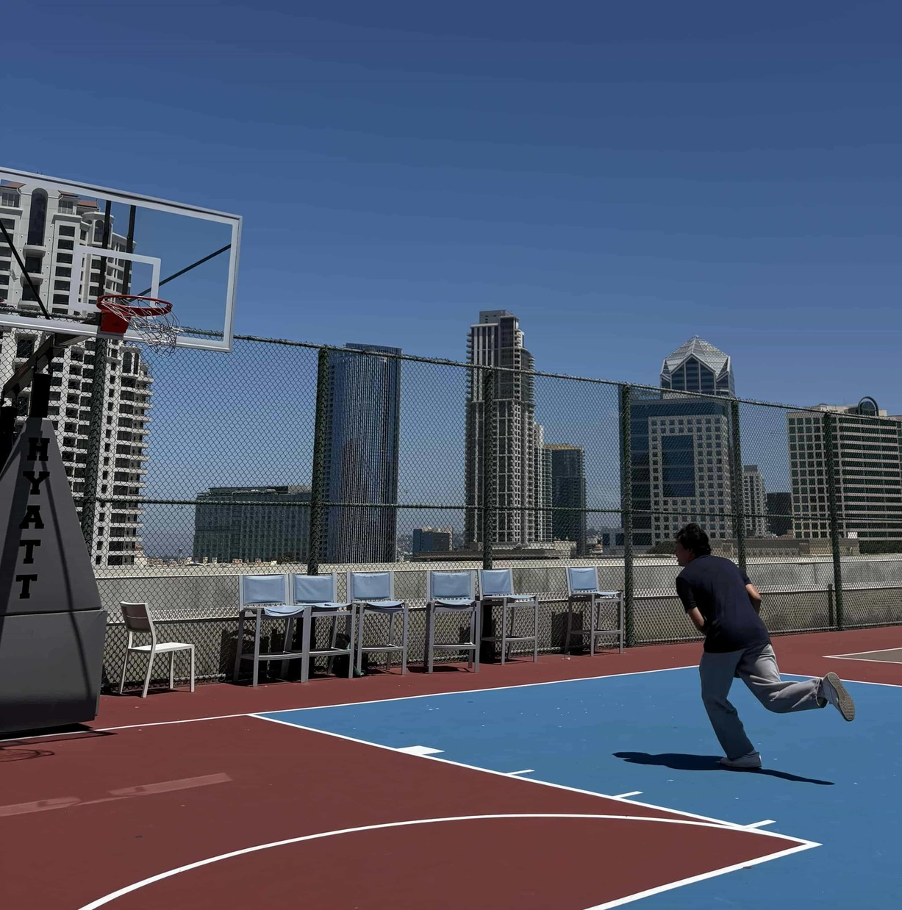
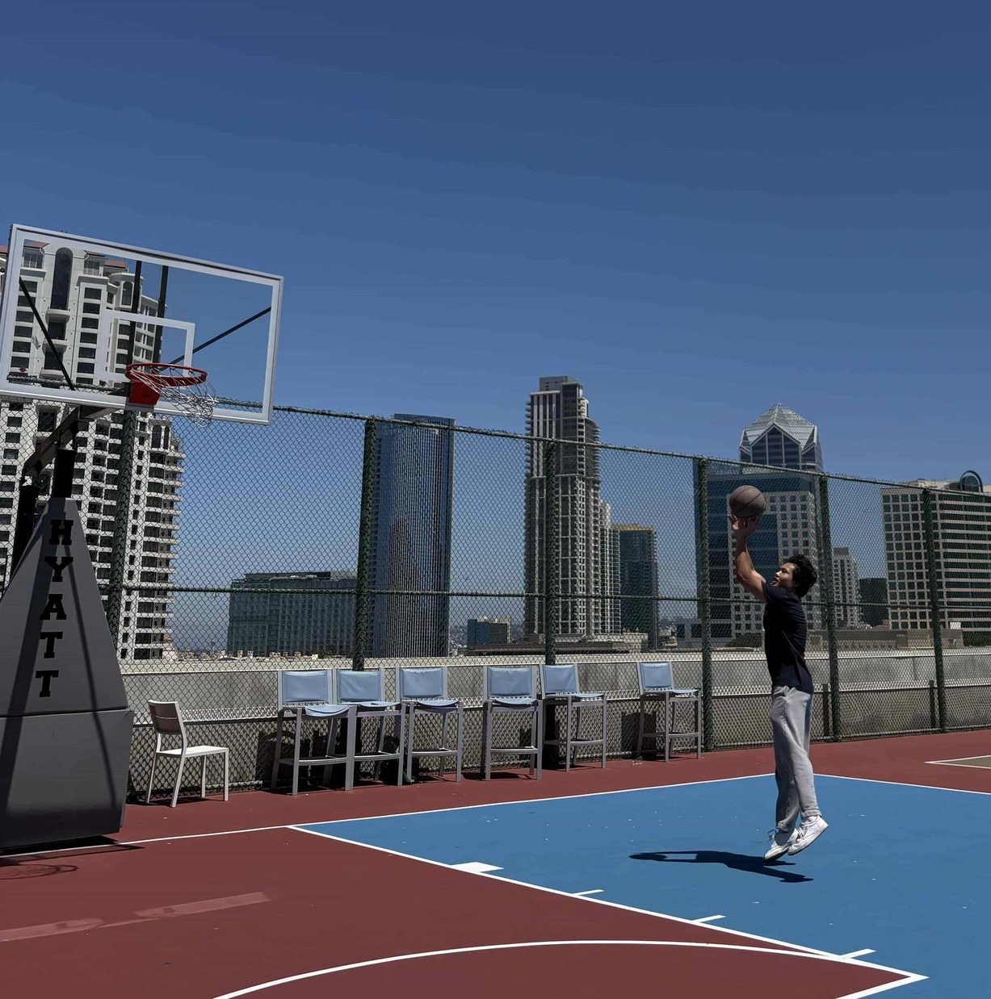
I first use the provided starter code (align_image_code.py's align_images()) to align the pairs of images to where I want (e.g., for Derek + Nutmeg, align their eyes).
Then, I implemented code to low-pass filter to one image (Derek) and high-pass filter the other image (Nutmeg). I used a standard 2D Gaussian filter for the low-pass filter, and simply subtract the low-pass filtered image from the original.
def low_pass_filter(im, kernel_size=9, sigma=2):
G = gaussian_filter(kernel_size, sigma)
blurred_im = np.zeros_like(im, dtype=np.float32)
for channel in range(im.shape[2]):
blurred_im[:, :, channel] = sp.signal.convolve2d(im[:, :, channel], G, mode='same', boundary='symm')
return blurred_im
def high_pass_filter(im, kernel_size=9, sigma=2):
return im - low_pass_filter(im, kernel_size, sigma)
Using these pass filters, I simply add together the low-pass filtered image with the high-pass filtered image with adjustable cutoff-frequencies \(\sigma\) for each filter.
def hybrid_image(high_im, low_im, kernel_size=9, sigma_high=2, sigma_low=2):
high_im = high_pass_filter(high_im, kernel_size, sigma_high)
low_im = low_pass_filter(low_im, kernel_size, sigma_low)
hybrid = high_im + low_im
return np.clip(hybrid, 0, 1), high_im, low_im
I also wanted to keep track of the frequency content of all the images throughout the process. For visualization, I compute the log-magnitude of the Fourier transform, with the zero-frequency component shifted to the center of the image using np.fft.fftshift(). This makes it easier to see the distribution of high- and low-frequency components.
def save_fft(im, filename):
if im.ndim == 3:
im_gray = np.mean(im, axis=2) # convert to grayscale
else:
im_gray = im
f = np.fft.fft2(im_gray)
fshift = np.fft.fftshift(f)
magnitude = np.log(np.abs(fshift))
magnitude = magnitude / np.max(magnitude) # normalize
convert_and_save_uint8(magnitude, filename)
Now, choosing the cutoff frequencies \(\sigma_{\text{high}} = 10\) and, \(\sigma_{\text{low}} = 25\) the result of the code
derek = skio.imread(f'./data/DerekPicture.jpg')
derek = sk.img_as_float(derek)
nutmeg = skio.imread(f'./data/nutmeg.jpg')
nutmeg = sk.img_as_float(nutmeg)
nutmeg_aligned, derek_aligned = align_images(nutmeg, derek)
sigma_high = 10
sigma_low = 25
hybrid, high_im, low_im = hybrid_image(high_im=nutmeg_aligned, low_im=derek_aligned, sigma_high=sigma_high,
sigma_low=sigma_low)
save_fft(nutmeg_aligned, 'fft_nutmeg')
save_fft(derek_aligned, 'fft_derek')
save_fft(low_im, 'fft_low')
save_fft(high_im, 'fft_high')
save_fft(hybrid, 'fft_hybrid')
is:
Aligned images
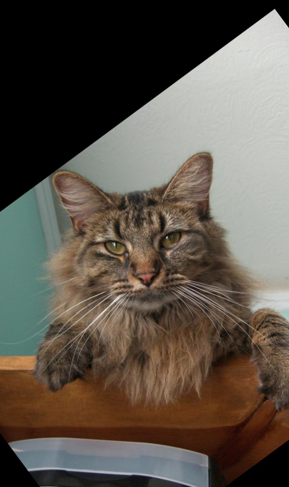
Aligned Nutmeg
Aligned Derek
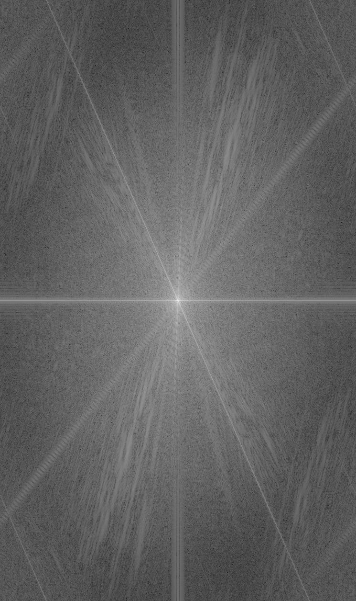
Aligned Nutmeg (log-magnitude FFT)
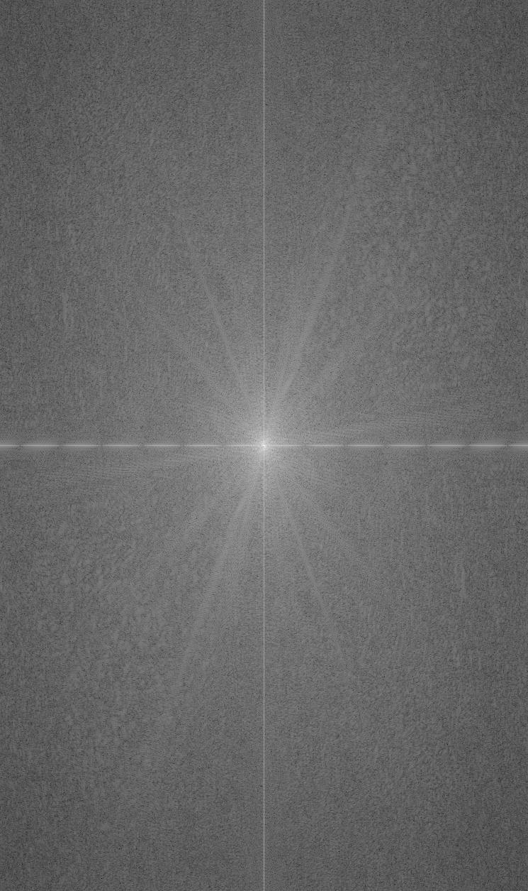
Aligned Derek (log-magnitude FFT)
Filtered results
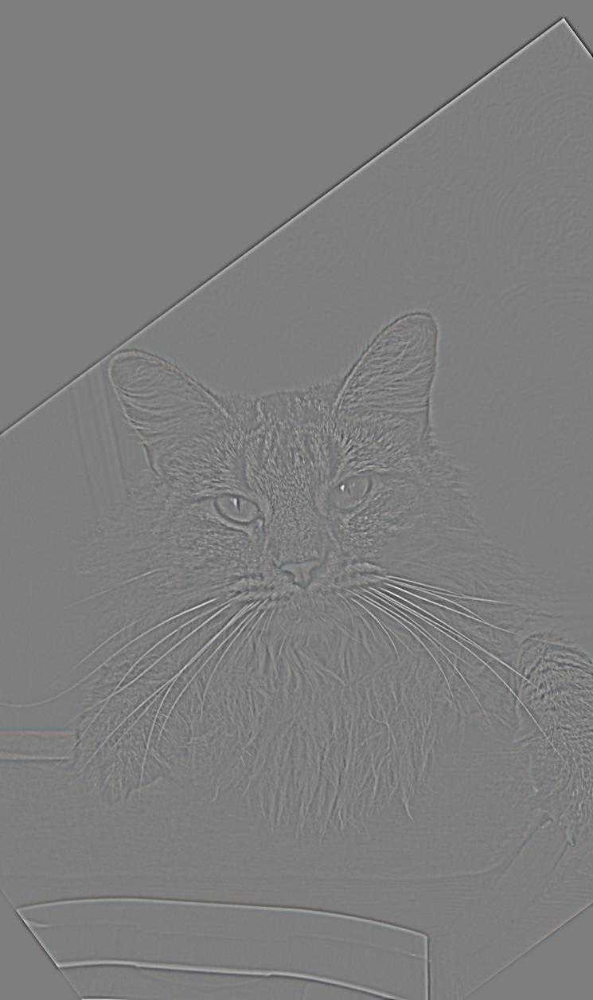
High-pass filtered Nutmeg
Low-pass filtered Derek
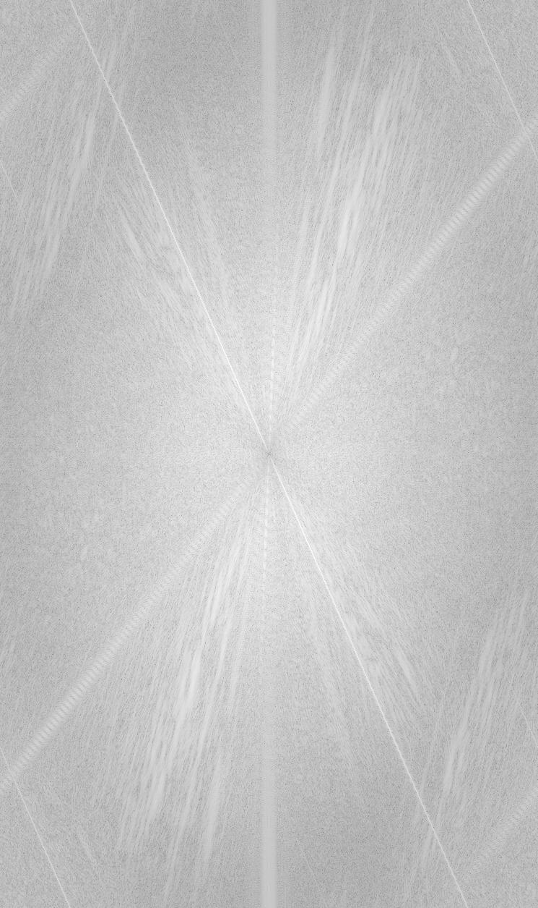
High-pass filtered Nutmeg (log-magnitude FFT)
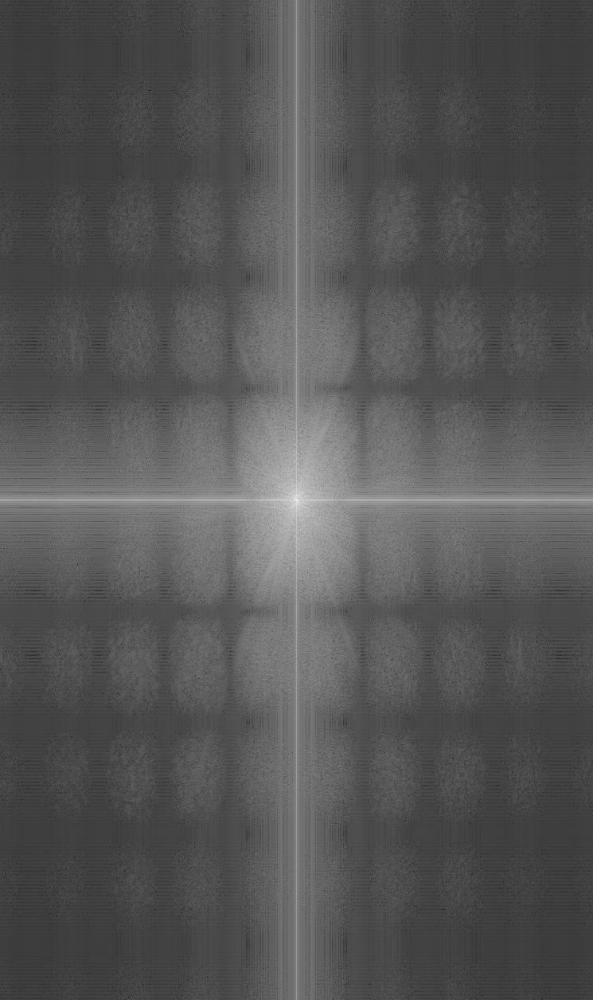
Low-pass filtered Derek (log-magnitude FFT)
Final image
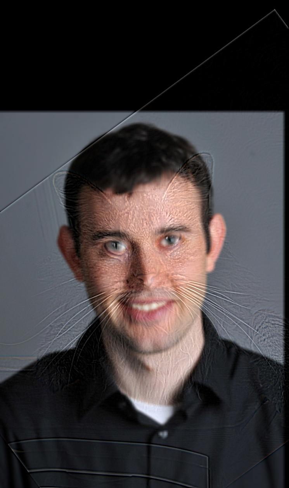
Hybrid image
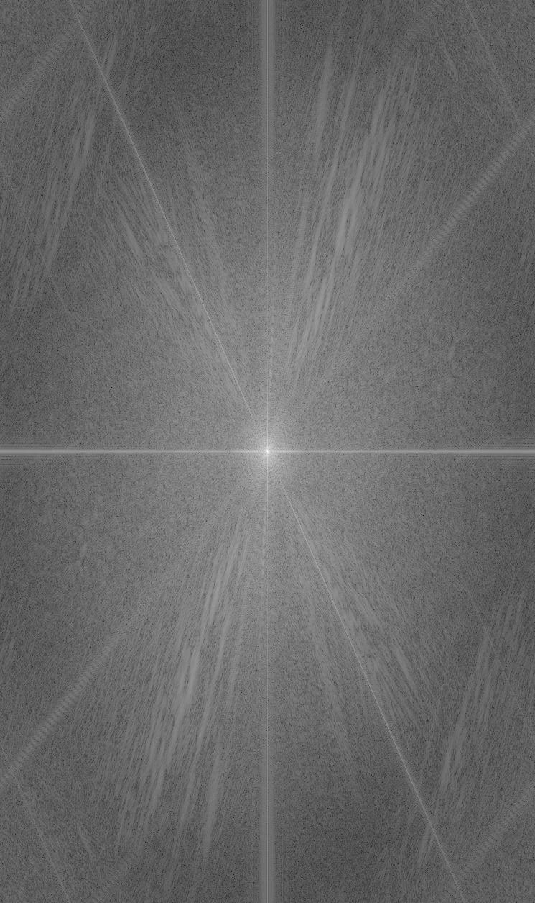
Hybrid image (log-magnitude FFT)
Here are the results of the other pairs of images:
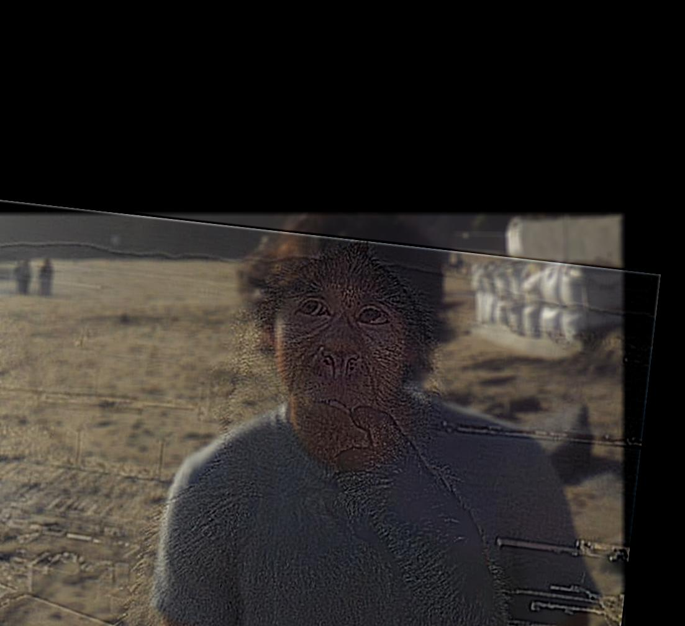
Hybrid image (Curious me)
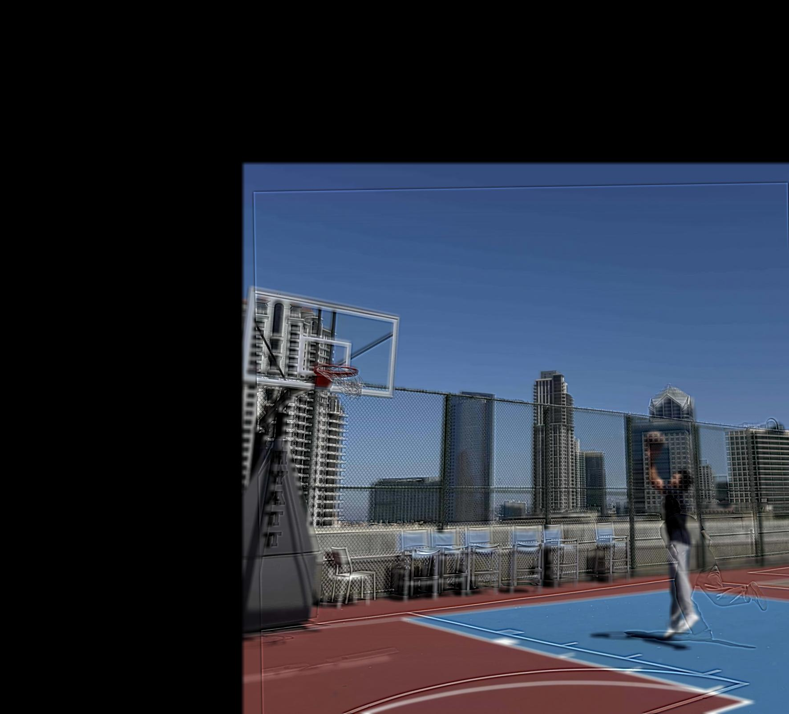
Hybrid image (Basketball)
Part 2.3: Gaussian and Laplacian Stacks
Here is my implementation for the Gaussian and Laplacian stacks:
def gaussian_stack(im, levels=5, sigma=2):
G = gaussian_filter(9, sigma)
stack = [im]
for _ in range(1, levels):
if im.ndim == 3: # color image
level = np.zeros_like(stack[-1])
for channel in range(im.shape[2]):
level[:, :, channel] = sp.signal.convolve2d(stack[-1][:, :, channel], G,
mode='same', boundary='symm')
else:
level = sp.signal.convolve2d(stack[-1], G, mode='same', boundary='symm')
stack.append(level)
return stack
def laplacian_stack(im, levels=5, sigma=2):
g_stack = gaussian_stack(im, levels, sigma)
l_stack = []
for i in range(levels-1):
l_stack.append(g_stack[i] - g_stack[i+1])
l_stack.append(g_stack[-1]) # last level
return l_stack, g_stack
Applying these to the oraple for 9 levels:
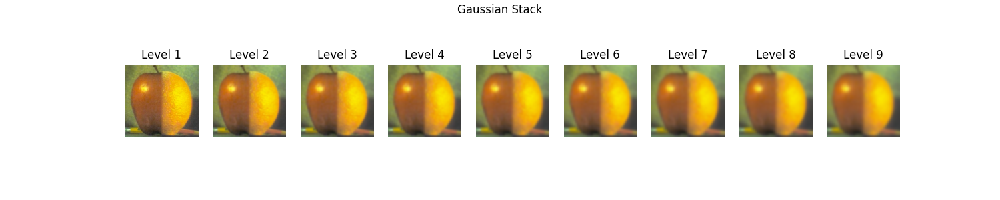
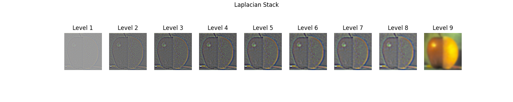
Part 2.4: Multi-Resolution Blending (a.k.a. the Oraple!)
Using the Gaussian and Laplacian stacks, I implemented Burt and Adelson's multi-resolution spline algorithm from the 1983 paper in order to create the oraple, along with two other images.
def multires_spline(im1, im2, mask, levels=5, sigma=2):
# Step 1a
l1, _ = laplacian_stack(im1, levels, sigma)
l2, _ = laplacian_stack(im2, levels, sigma)
# Step 1b
gr = gaussian_stack(mask, levels, sigma)
# Step 2
LS = []
for i in range(levels):
LS.append(gr[i] * l1[i] + (1 - gr[i]) * l2[i])
# Step 3
out = LS[-1]
for i in range(len(LS)-2, -1, -1):
out += LS[i]
return out
Since I am using stacks instead of pyramids, you will need to use a mask for the images.
Oraple
I will be using a smoothed vertical seam as the mask to nicely blend the apple and orange together.
Inputs

An apple

An orange
Masked Inputs
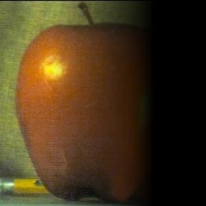
An apple (masked)
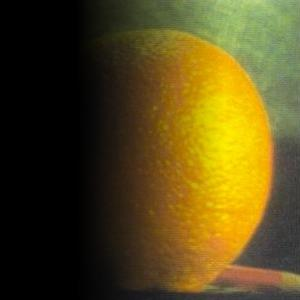
An orange (masked)
Multi-resolution blended image
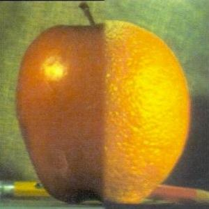
An oraple
Rothko
I will be using a smoothed horizontal seam as the mask to blend both of the Rothkos.
Inputs
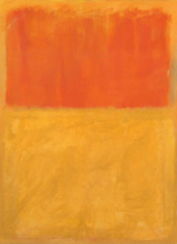
Mark Rothko, Orange and Tan. 1954
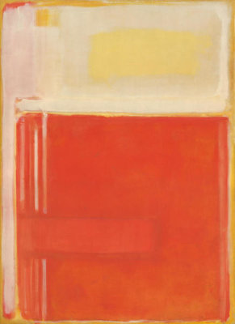
Mark Rothko, No. 8. 1949
Masked Inputs
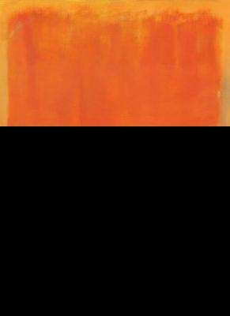
Mark Rothko, Orange and Tan. 1954 (masked)
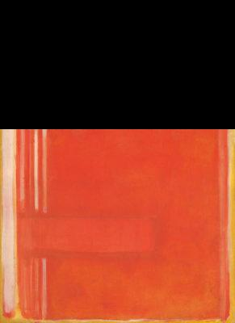
Mark Rothko, No. 8. 1949 (masked)
Multi-resolution blended image
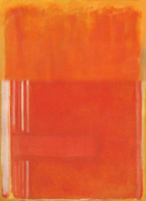
A hybrid of Orange and Tan and No. 8 by Mark Rothko
Manga
I will be using a hand-drawn mask in order to stitch together two manga panels. This is what the mask looks like before smoothing:
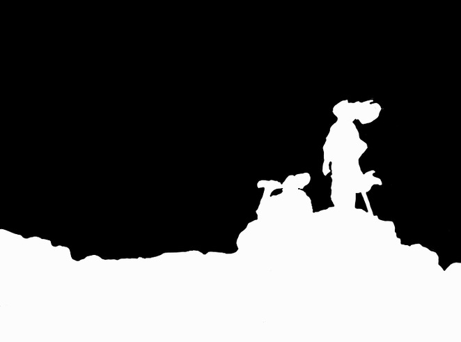
Inputs
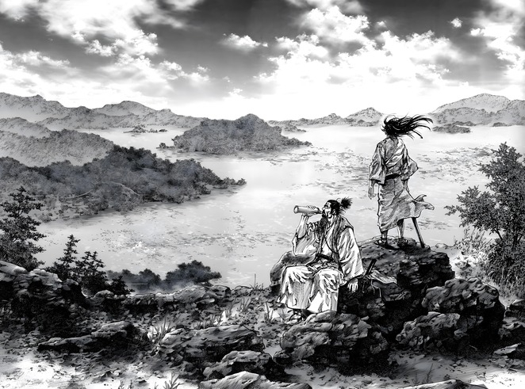
A panel from Vagabond, by Takehiko Inoue
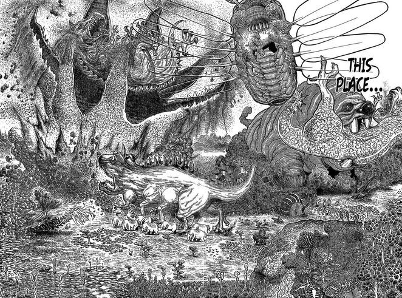
A panel from Hunter x Hunter, by Yoshihiro Togashi
Masked Inputs
A panel from Vagabond, by Takehiko Inoue (masked)
A panel from Hunter x Hunter, by Yoshihiro Togashi (masked)
Multi-resolution blended image
A hybrid of manga panels from Vagabond and Hunter x Hunter
Conclusion
Through this project, I had experience with both spatial and frequency domain techniques in image processing. Starting from basic convolution implementations, I moved toward unsharp masking for sharpening, hybrid images that exploit low- and high-frequency perception, and finally Gaussian/Laplacian stacks for multi-resolution blending.
One of the key lessons was that blending quality depends critically on the mask, as a sharp binary mask produces visible seams, while smoothing the mask before applying the multi-resolution algorithm yields seamless transitions (shoutout to Anonymous Clam). Conceptually, I also deepened my understanding of how the Fourier transform reveals frequency content and why manipulating low vs. high frequencies leads to different perceptual effects.